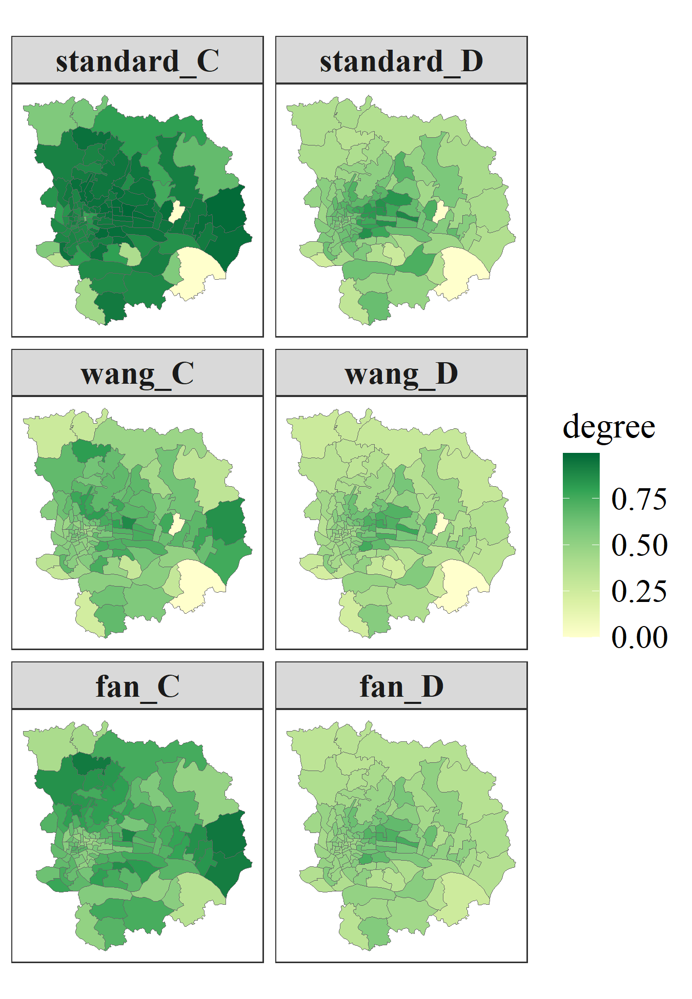
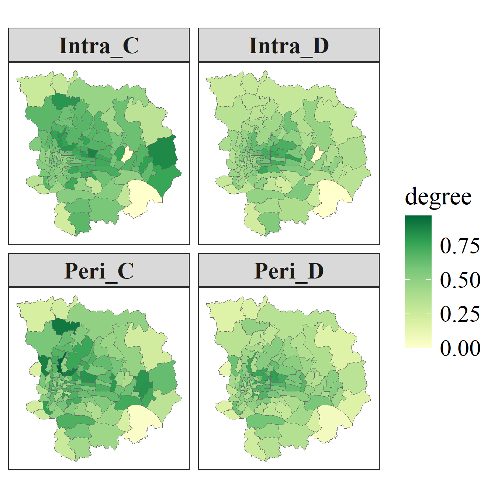

Coupling Coordination Degree Model and Metacoupling Analysis
Wenbo Lyu
Last
update: 2026-05-12
Last run: 2026-05-11
Source: Last run: 2026-05-11
vignettes/ccd.Rmd
ccd.RmdIntroduction
The Coupling Coordination Degree (CCD) model is widely used to quantify the degree of coupling and coordinated development among multiple subsystems. Originating from physics, it has been extensively applied in regional and human–environment systems.
Coupling Degree
Given n normalized subsystem indicators \(U_i\), the standard coupling degree \(C\) is defined as:
\[ C = \left[ \frac{\prod_{i=1}^{n} U_i}{\left( \frac{1}{n} \sum_{i=1}^{n} U_i \right)^n} \right]^{\frac{1}{n}} \]
Although widely used, this formulation may suffer from scale sensitivity and over-amplification effects due to the power structure. To address these issues, several formulations have been proposed by modifying the functional form of the coupling degree.
Modified Coupling Degree
Modification by \(\text{wang et al}^{[1]}\).
First, Wang et al. introduce a formulation that incorporates pairwise differences among subsystems while normalizing their relative magnitudes:
\[ C = \sqrt{\left[1-\frac{\sum\limits_{i>j,j=1}^{n-1} \sqrt{\left(U_i-U_j\right)^2}}{\sum_{m=1}^{n-1}m}\right] \times \left(\prod_{i=1}^n \frac{U_i}{\text{max} U_i}\right)^{\frac{1}{n-1}}} \]
Comprehensive Development Index
The overall development level is defined as:
\[ T = \sum_{i=1}^{n} \alpha_i U_i \]
where \(\alpha_i\) are weights with \(\sum \alpha_i = 1\).
Example Cases
Install necessary packages and load data
install.packages(c("sdsfun", "coupling", "tidyr", "dplyr", "ggplot2"), dep = TRUE)The gzma dataset represents the Data of Social Space
Quality in Guangzhou Metropolitan Areas of China (2010). It
contains multiple indicators describing urban social space conditions.
In particular, four key variables correspond to subsystem scores,
including population stability (PS_Score), educational
level (EL_Score), occupational hierarchy
(OH_Score), and income level (IL_Score).
Load the gzma dataset from the sdsfun
package:
gzma = sf::read_sf(system.file('extdata/gzma.gpkg',package = 'sdsfun'))
gzma
## Simple feature collection with 118 features and 4 fields
## Geometry type: POLYGON
## Dimension: XY
## Bounding box: xmin: 113.1485 ymin: 22.94659 xmax: 113.5628 ymax: 23.33026
## Geodetic CRS: WGS 84
## # A tibble: 118 × 5
## PS_Score EL_Score OH_Score IL_Score geom
## <dbl> <dbl> <dbl> <dbl> <POLYGON [°]>
## 1 7.21 4.64 4.75 2.64 ((113.2797 23.13359, 113.2715 23.13413, 113.2682 23.13371, …
## 2 3.55 3.81 3.91 4.06 ((113.2519 23.15353, 113.2497 23.15545, 113.254 23.15774, 1…
## 3 7.94 4.69 4.86 3.31 ((113.2815 23.12902, 113.2749 23.12969, 113.2732 23.12523, …
## 4 8.22 4.93 4.92 3.74 ((113.3098 23.12458, 113.3046 23.12448, 113.3026 23.12642, …
## 5 7.84 4.74 4.98 4.69 ((113.3099 23.11566, 113.3087 23.11542, 113.2957 23.11531, …
## 6 8.12 5.13 4.98 3.92 ((113.2864 23.13354, 113.2863 23.135, 113.2884 23.1375, 113…
## 7 8.30 5.18 4.87 3.77 ((113.2797 23.13359, 113.2799 23.13956, 113.274 23.14182, 1…
## 8 5.14 4.43 4.41 4.13 ((113.3013 23.16168, 113.2985 23.16208, 113.296 23.16051, 1…
## 9 5.92 4.18 4.37 2.29 ((113.2631 23.12832, 113.2586 23.12813, 113.2592 23.12228, …
## 10 6.99 4.32 4.24 2.72 ((113.2747 23.12164, 113.2727 23.12362, 113.2732 23.12523, …
## # ℹ 108 more rowsNormalize the *_Score columns:
dt = apply(sf::st_drop_geometry(gzma), 2,
\(.x) (.x - min(.x)) / (max(.x) - min(.x)))
head(dt)
## PS_Score EL_Score OH_Score IL_Score
## 1 0.8179733 0.3246648 0.6590316 0.1308531
## 2 0.3020233 0.1318888 0.4046987 0.5173794
## 3 0.9209903 0.3353516 0.6921477 0.3141320
## 4 0.9604095 0.3914758 0.7099999 0.4316421
## 5 0.9061589 0.3473603 0.7297774 0.6909494
## 6 0.9456379 0.4391423 0.7304117 0.4792905Analysis of coupling coordination degree
ccd_standard = coupling::ccd(dt)
head(ccd_standard)
## C D
## 1 0.8051958 0.6237105
## 2 0.8914577 0.5497290
## 3 0.8999423 0.7134825
## 4 0.9346128 0.7632959
## 5 0.9440912 0.7944703
## 6 0.9519923 0.7858001
ccd_wang = coupling::ccd(dt, method = "wang")
head(ccd_wang)
## C D
## 1 0.4722274 0.4776480
## 2 0.6211236 0.4588675
## 3 0.5375842 0.5514412
## 4 0.5861986 0.6045044
## 5 0.6640321 0.6662930
## 6 0.6319211 0.6402164
ccd_fan = coupling::ccd(dt, method = "fan")
head(ccd_fan)
## C D
## 1 0.4593785 0.4711049
## 2 0.7164548 0.4928249
## 3 0.4915051 0.5272784
## 4 0.5399620 0.5801746
## 5 0.5951898 0.6308098
## 6 0.5907777 0.6190239
ccd_df = do.call(cbind, list(ccd_standard, ccd_wang, ccd_fan))
names(ccd_df) = paste0(rep(c("standard", "wang", "fan"), each = 2),
"_", rep(c("C", "D"), times = 3))
fig1 = ccd_df |>
sf::st_set_geometry(sf::st_geometry(gzma)) |>
tidyr::pivot_longer(-geometry, names_to = "var", values_to = "val") |>
dplyr::mutate(var = factor(var, levels = names(ccd_df))) |>
ggplot2::ggplot() +
ggplot2::geom_sf(ggplot2::aes(fill = val), color = "grey40", lwd = 0.15) +
ggplot2::scale_fill_gradientn(
name = "degree",
colors = c("#ffffcc", "#d9f0a3", "#addd8e",
"#78c679", "#31a354", "#006837")
) +
ggplot2::facet_wrap(~var, ncol = 2) +
ggplot2::theme_bw(base_family = "serif") +
ggplot2::theme(
panel.grid = ggplot2::element_blank(),
axis.text = ggplot2::element_blank(),
axis.ticks = ggplot2::element_blank(),
strip.text = ggplot2::element_text(face = "bold", size = 15),
legend.title = ggplot2::element_text(size = 16.5),
legend.text = ggplot2::element_text(size = 15)
)
fig1
A Meta-Coupling Analysis
Due to data limitations, here we focus on peri-coupling based on a Queen contiguity structure. Pericoupling among neighboring units are further weighted using an inverse distance scheme. The calculation of the coupling coordination degree adopts the formulation proposed by \(\text{wang et al}^{[1]}\).
nb = sdsfun::spdep_nb(gzma)
swm_peri = sdsfun::inverse_distance_swm(gzma)
for (i in seq_len(nrow(gzma))) {
swm_peri[i, seq_len(nrow(gzma))[-nb[[i]]]] = 0
}
swm_peri = apply(swm_peri, 1, \(.x) .x / sum(.x))
mc_wang = coupling::metacoupling(dt, swm_peri = swm_peri, method = "wang")
head(mc_wang)
## Intra_C Intra_D Peri_C Peri_D Tele_C Tele_D
## 1 0.4722274 0.4776480 0.7414392 0.7507625 0 0
## 2 0.6211236 0.4588675 0.6712215 0.5061883 0 0
## 3 0.5375842 0.5514412 0.4539894 0.4644758 0 0
## 4 0.5861986 0.6045044 0.6692548 0.6808108 0 0
## 5 0.6640321 0.6662930 0.6880871 0.6870927 0 0
## 6 0.6319211 0.6402164 0.6064480 0.6032699 0 0
fig2 = mc_wang |>
dplyr::select(dplyr::all_of(c("Intra_C", "Intra_D", "Peri_C", "Peri_D"))) |>
sf::st_set_geometry(sf::st_geometry(gzma)) |>
tidyr::pivot_longer(-geometry, names_to = "var", values_to = "val") |>
dplyr::mutate(var = factor(var,
levels = c("Intra_C", "Intra_D", "Peri_C", "Peri_D"))) |>
ggplot2::ggplot() +
ggplot2::geom_sf(ggplot2::aes(fill = val), color = "grey40", lwd = 0.15) +
ggplot2::scale_fill_gradientn(
name = "degree",
colors = c("#ffffcc", "#d9f0a3", "#addd8e",
"#78c679", "#31a354", "#006837")
) +
ggplot2::facet_wrap(~var, ncol = 2) +
ggplot2::theme_bw(base_family = "serif") +
ggplot2::theme(
panel.grid = ggplot2::element_blank(),
axis.text = ggplot2::element_blank(),
axis.ticks = ggplot2::element_blank(),
strip.text = ggplot2::element_text(face = "bold", size = 15),
legend.title = ggplot2::element_text(size = 16.5),
legend.text = ggplot2::element_text(size = 15)
)
fig2
References
[1] Wang, S., Kong, W., Ren, L. and ZHI, D., 2021. Research on misuses and modification of coupling coordination degree model in China. Journal of Natural Resources, 36, 793-810. https://doi.org/10.31497/zrzyxb.20210319
[2] Fan, D., Ke, H. and Cao, R., 2024. Modification and improvement of coupling coordination degree model. Stat. Decis, 40, 41-46. https://doi.org/10.13546/j.cnki.tjyjc.2024.22.007
[3] Tang, P., Huang, J., Zhou, H., Fang, C., Zhan, Y., Huang, W., 2021. Local and telecoupling coordination degree model of urbanization and the eco-environment based on RS and GIS: A case study in the Wuhan urban agglomeration. Sustainable Cities and Society 75, 103405. https://doi.org/10.1016/j.scs.2021.103405
[4] Li, Y., Jia, N., Zheng, L., Yin, C., Chen, K., Sun, N., Jiang, A., Wang, M., Chen, R., Zhou, Z., 2026. A meta-coupling analysis between three-dimensional urbanization and ecosystem services in China’s urban agglomerations. Communications Earth & Environment 7. https://doi.org/10.1038/s43247-025-03047-w